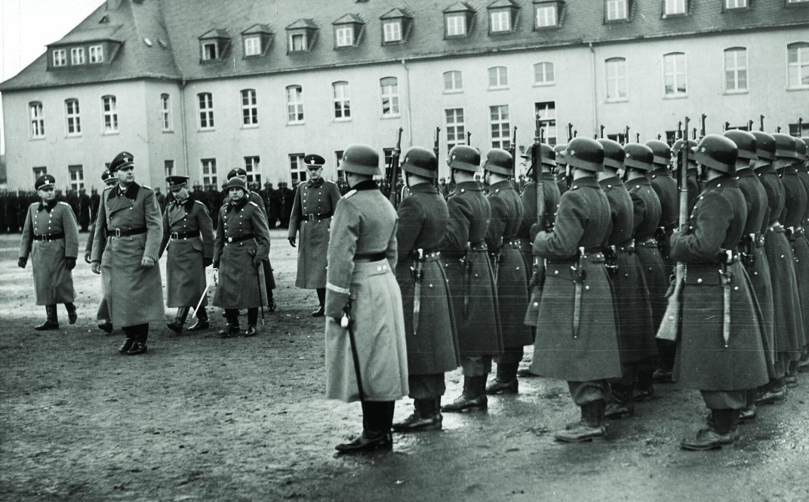
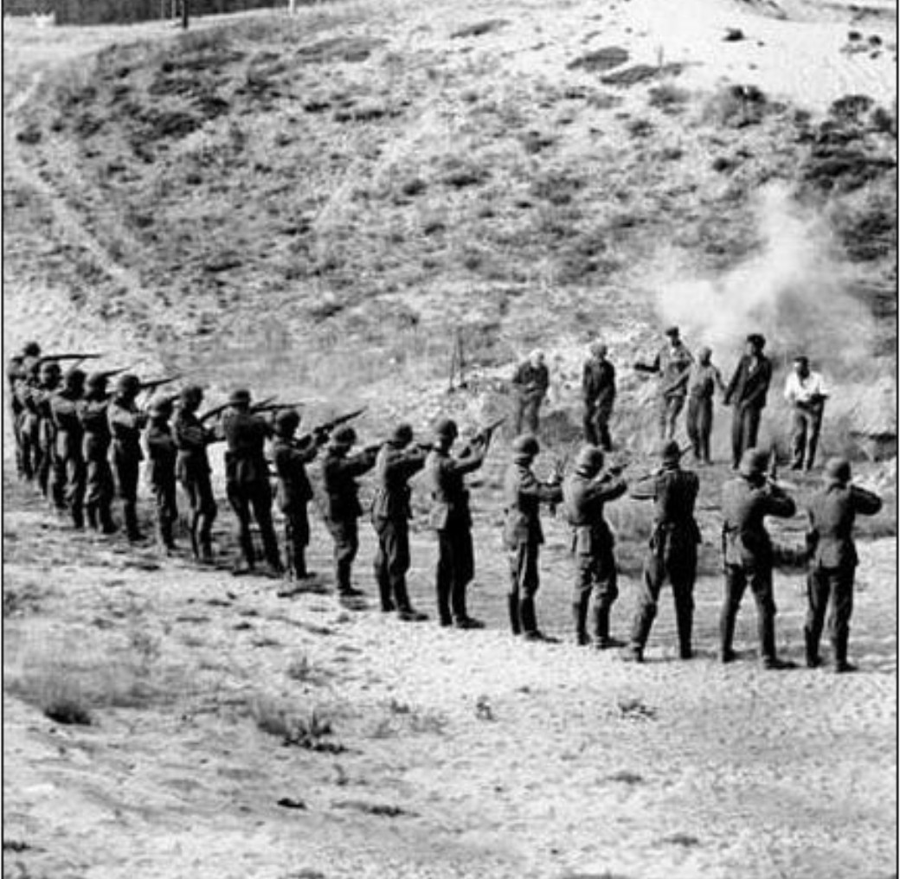

Les Einsatzgruppen sont des unités spéciales de la SS et de la police, chargées d’exécuter les politiques d’extermination du régime nazi dans les territoires envahis à partir de 1939. Leur action est au cœur de la Shoah par balles, une phase de la destruction des Juifs d’Europe menée avant les camps d’extermination.
Dès l’invasion de la Pologne en 1939, puis de l’URSS en 1941, le régime nazi met en place des unités mobiles chargées de :
Ces unités suivent l’armée allemande et appliquent une politique d’anéantissement décidée au sommet du régime.
Les Einsatzgruppen sont divisés en quatre grands groupes :
Chaque groupe dispose de :

Les Einsatzgruppen organisent des rafles, des regroupements forcés, puis des fusillades de masse dans :
Les victimes sont souvent tuées près de leur lieu de vie, dans des sites devenus des lieux de mémoire (Babi Yar, Ponary, Rumbula).
Entre 1939 et 1943, les Einsatzgruppen assassinent environ :
Leur action constitue l’une des phases les plus meurtrières de la Shoah.
Après la guerre, les chefs des Einsatzgruppen sont jugés lors des procès de Nuremberg. Plusieurs sites de massacres sont aujourd’hui des lieux de mémoire, rappelant la nécessité de documenter et de transmettre l’histoire de la Shoah par balles.